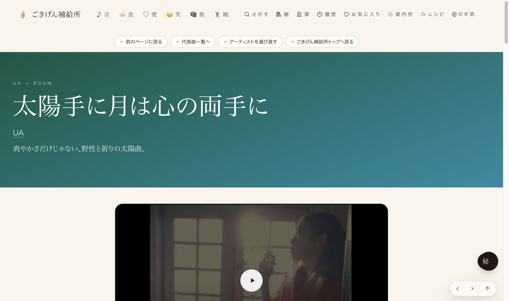
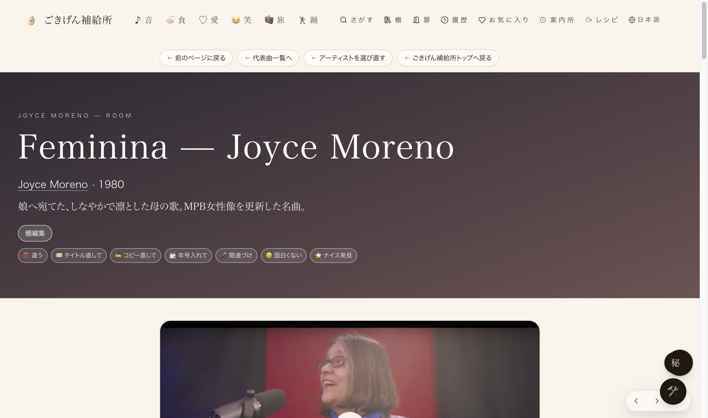
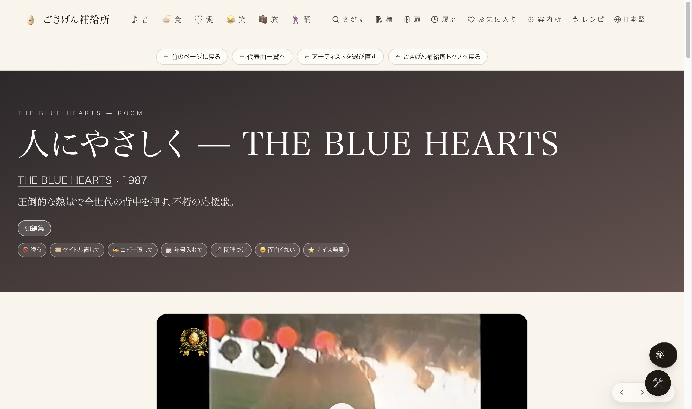
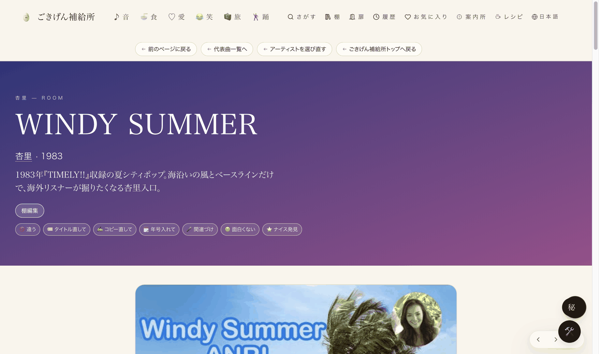

#7 曲ページの「アーティスト未接続」カードを直す
2026-09-05 実装・main合流・Lovable公開・本番反映を実測確認済み
曲ページ「この曲の関連動画」に、演者の分かる動画が入っているのに下に「アーティスト未接続」と表示され、アーティストページへ繋がらないカードがあった（実例：UAの曲ページに本人ライブ映像が入っているのに接続先が無い）。DB全体（133曲分）を調べ、該当する全8本のうち、YouTube投稿者情報（識別子）で演者を確認でき、かつ既存のアーティストページが既にある4本を、そのページへ接続した。
① 全部数えた結果（先に一覧）
admin_song_overrides.related_videos（曲ページの関連動画データ）を全133行スキャン。全10本の関連動画のうち8本で「アーティスト未接続」状態だった。
| # | 曲ページ | 関連動画 | 投稿者（識別子確認） | 対応 |
|---|
| 1 | UA「太陽手に月は心の両手に」 | 本人ライブ映像(2024) | UA本人 | ✓ 接続済み（今回） |
| 2 | Joyce Moreno「Feminina」 | 本人動画 | Joyce Moreno本人 | ✓ 接続済み（今回） |
| 3 | THE BLUE HEARTS「人にやさしく」 | 1988年CM本人出演映像 | THE BLUE HEARTS本人 | ✓ 接続済み（今回） |
| 4 | 杏里「WINDY SUMMER」 | Night Tempo Edit | Night Tempo | ✓ 接続済み（今回） |
| 5 | ニャンゴスター「overqualified for the job」 | 「紅」振付カバー | 紅雨改（既存ページ無し） | ✕ 未対応・新規仕入れ要 |
| 6 | サカナクション「新宝島」 | 男性ダンサー動画 | Cheer Here!（既存ページ無し） | ✕ 未対応・新規仕入れ要 |
| 7 | Bruno Mars「Uptown Funk」 | アニメMV編集 | 3StarsAmV（演者不在の編集チャンネル） | ✕ 未対応・対象外 |
| 8 | Bruno Mars「Uptown Funk」 | TikTokアカペラカバー | 0zern（既存ページ無し） | ✕ 未対応・新規仕入れ要 |
5〜8は「既存の部屋（アーティストページ）が無い・演者が特定できない」ため、今回の対応範囲外（棚への追加ではなく新規仕入れの判断領域）。今回直したのは1〜4の4件。
② 数字
133行DBの曲オーバーライドを全件スキャン
8/10本「アーティスト未接続」だった関連動画
4件識別子で演者確認・既存ページへ接続完了
| 確認項目 | 方法 | 結果 |
|---|
| 演者の同定 | YouTube oEmbed（author_name/author_url）で識別子確認 | 4件とも本人または既存アーティスト確認 ✓ |
| 本番DBが更新されたか | 一度きり便APIを実行し、応答ログで件数確認 | fixed:4, skippedAlready:0 ✓ |
| 本番画面で「アーティスト未接続」が消えたか | 本番URLを実機（Chrome・JS実行後のDOM）で開いて確認 | 4ページとも「by 〇〇」のリンク表示に変化 ✓ |
| 本番(Lovable)に反映されているか | 公開ボタンを押し、x-deployment-id変化を確認 | psr2.22581fb → psr2.10ad849 ✓ |
| 型・ビルド | tsc --noEmit／vite build／eslint | 新規エラーなし・ビルド成功 ✓ |
③ 押せるリンク（実物）
④ 前と後
「前」の画面キャプチャは今回ありません。理由：本番の一度きり便APIを実行した時点で即座にDBが更新され、直後に確認したため「未接続のまま」の状態を撮り直せなかったため。「未接続」だった時の見た目は、たまごさんが最初に見つけたスクリーンショット（UAのページ、関連動画カードの下にグレー文字で「アーティスト未接続」とだけ出る状態）と同じです。下記4枚は、いずれも本番URLを実機（JS実行後）で開いて撮影した「後」の実写です。

① 本番実写：UA「太陽手に月は心の両手に」。「by UA」のリンクに変わり、UA本人のページへ飛べる。

② 本番実写：Joyce Moreno「Feminina」。「by Joyce Moreno」のリンクに変わった。

③ 本番実写：THE BLUE HEARTS「人にやさしく」。「by THE BLUE HEARTS」のリンクに変わった。

④ 本番実写：杏里「WINDY SUMMER」（Night Tempo Edit）。「by Night Tempo」のリンクに変わった（リミックスした本人へ接続）。
残った課題（今回の対応範囲外）
上の表5〜8番の4本（ニャンゴスター「紅」振付カバー・サカナクション「新宝島」男性ダンサー動画・Bruno Mars「Uptown Funk」のAMV編集／TikTokアカペラカバー）は、演者の既存アーティストページが無いため未対応。棚への追加ではなく新規アーティスト仕入れの判断領域のため、店主の判断を待ちます。